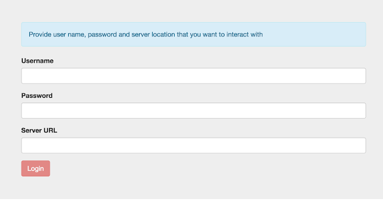
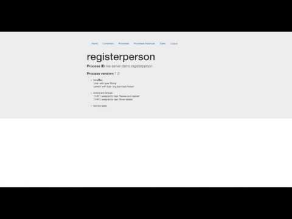

Unified KIE Execution Server – Part 4
Here we come with next part of the Unified KIE Execution Server blog series – this time Part 4 that introduces Client UI written in JavaScript – AngularJS.
This aims at illustrating how easy it is to built fully featured Client UI that interacts with KIE Execution Server through REST API.
This aims at illustrating how easy it is to built fully featured Client UI that interacts with KIE Execution Server through REST API.
KIE Execution Server has been designed from the very beginning to be lightweight and consumable with whatever technology you like. Obviously it has to run on Java but components that integrate with it can be written in any language. To demonstrate that it actually works I came up with very basic UI written in AngularJS that uses:
- REST API
- JSON as data format
So what can it do? Quite a lot to be honest – although those who are familiar with AngularJS will directly notice that I am not an expert in this area while looking at the code. Apologies for that, although this was not the intention to show best practice in building AngularJS applications but to show you how easy it is (as I managed to do so :)) to interact with KIE Execution Server.
Let’s start with it then…
Installation
Installation is extremely simple – just clone this repository where you find jbpm-angular-js module. This is the application that we’ll be using for the demo. Once you have it locally
- copy app folder that exists in jbpm-angular-js into your wildfly installation:
WILDFLY_HOME/standalone/deployments
it should be co-located with kie-server.war
- rename the folder from app to app.war
And that’s it, your installation is complete.
NOTE: we did put that on the same server as KIE Execution Server to avoid any CORS releated issues that will come up when using JavaScript application that resides on different server than the back end application.
Now you can start the Wildfly server and (assuming you use configuration used in previous parts of this blog series) access the AngularJS application at:
 |
| AngularJS logon screen for KIE Execution Server app |
You’ll be presented with very simple logon screen that asks (as usual) for user name and password and in addition to that for KIE Execution Server URL that will be used as our backend service. Here you can simply put:
Make sure to provide valid credentials (e.g kieserver/kieserver1!) that are known to KIE Execution Server to be properly authenticated.
Demo description
Let’s try to make use of the application and backend KIE Execution Server to see how it works. Here are list of steps we are going to perform to illustrate capabilities of custom UI application:
- look at available containers
- look at available process definitions
- examine details of process definition we are going to start an instance of
- start process instance with variables (both simple type and custom type)
- examine process instance details
- work with user tasks
- list available user tasks for logged in user
- examine details of selected task
- claim task
- start task
- complete task with variables (complex type)
Following screenshot shows the process definition that we are going to use:
A very simple process that consists of two user tasks:
- first ‘Review and Register‘ is used for gathering data from assigned user
- second ‘Show details‘ is just for the demo purpose to illustrate that process variable was properly updated with data given in first task
This process has two process variables:
- person – that is of type org.jbpm.test.Person and consists of following fields
- name – String
- address – String
- age – Integer
- registered – Boolean
- note – String
While working with this process we are going to exchange data between client (JavaScript) and server (Java) and as data format we will use JSON.
An important note for this application – this is a vary basic and generic application so it requires to provide valid JSON values when working with variables. To give an example (or two…)
- “my string” – for string type
- 123 – for number type
- {“one”, “two”, “three”} – for list of strings
- {“Person”:{“name”:”john”,”age”:25}} – for custom objects
Custom objects requires identifier that KIE Execution Server can use when unmarshalling to proper type. This can be given in either way:
- Simple class name = Person
- Fully qualified class name = org.jbpm.test.Person
Both formats are supported, though FQCN is usually safer (in case of possible conflicts when there are more than one class with same simple name). That’s not so common case therefore short/simple name might be used in most of the cases.
Before it can be actually used (as presented in below screencast) you need to deploy the container to kie server. Deploy sample project called kie-server-demo that you can find in this repository (simply clone it and build locally with maven or with (even better) KIE workbench) – see part 3 on how to deploy containers/projects
Demo
Here is screen cast demoing entire application working with described process.

I’d like to encourage you to give it a try yourself and see how does it fit your needs. With this you can start building UI for KIE Execution Server in the preferred technology/language. It’s has never be so simple :)
Comments and ideas for improvements more than welcome.

{kind=link}
{kind=link}